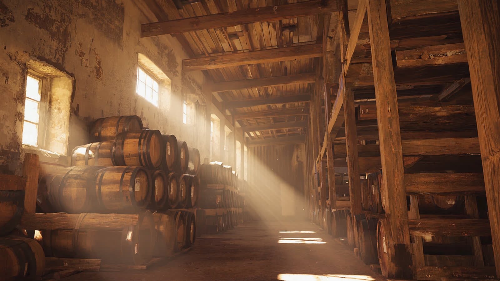
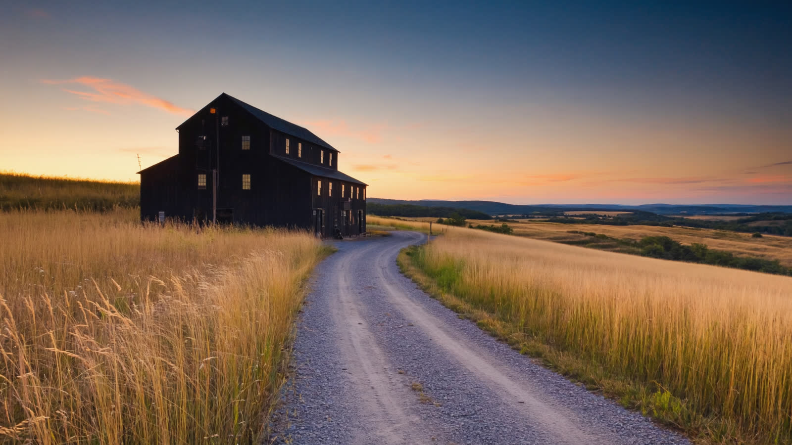

Why the best bourbon of the decade is coming out of warehouses built before the Depression, who is buying them, and what the whisky inside tastes like once it has spent twelve summers on the sixth floor.

The first thing you notice in an old rickhouse is the smell, and the second is the silence. Seven floors of oak and corn, the air thick enough to lean on, and nothing moving except the slow drip of condensation from the tin roof. The barrels here were filled in 2012. Nobody has touched them since, and that, it turns out, is the whole point.
For a decade the industry built new warehouses as fast as it could pour concrete. Climate controlled, palletized, efficient. The whisky they produce is clean and consistent and, by the tasters’ own admission, a little polite. The bottles that have been winning our panel over this year are coming from somewhere else: the ironclad, timber-framed rickhouses that the big houses kept for sentiment, and that a handful of smaller producers have been quietly buying.
The reason is weather. A tin-roofed rickhouse on a Kentucky ridge swings forty degrees between a July afternoon and a January night, and the top floors swing hardest. Every cycle pushes spirit into the wood and pulls it back out, carrying the compounds that read on the palate as caramel, dried fruit and spice. Pallet warehouses are designed to flatten exactly that swing.
What the panel has been tasting is the difference. Three of the four bourbons in this story spent their whole lives on the fifth floor or higher. None of them is cheap, but none of them is a lottery bottle either, and the best value among them is well under a hundred dollars.
The buyers are a mix. Two family-owned distilleries have bought back warehouses their grandparents sold. A craft producer in Bardstown leased a floor of a 1930s building from a larger neighbour and bottled its first release this spring. And at least one private equity group has put a line in its deck about “heritage maturation assets,” which is the kind of sentence that tends to arrive a year before prices do.

We pulled every bourbon the panel has rated this year and plotted it by price and score. The bottles from heritage warehouses are marked. They are not the most expensive bottles on the chart, and they cluster at the top of it.
Every bourbon rated this year. Dark dots are the four bottles in this story. Hover a dot for the bottle.
None of this means the new warehouses make bad whisky. It means they make a different whisky, and that for the first time in a generation the industry is being honest about the trade-off. For a reader with a budget, the practical advice is simple: look for the floor on the label, buy the barrel-proof version when there is one, and read the note before the score.
The bottles in this story are the ones the panel kept coming back to. Each score opens the full note, the taster, and where the bottle sits on the flavor compass against everything else we have rated this year.
One bottle, one note, one reason to buy it. Every Saturday.
Every bottle a story mentions becomes a card here, so the reading and the buying never lose each other.